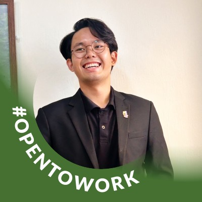
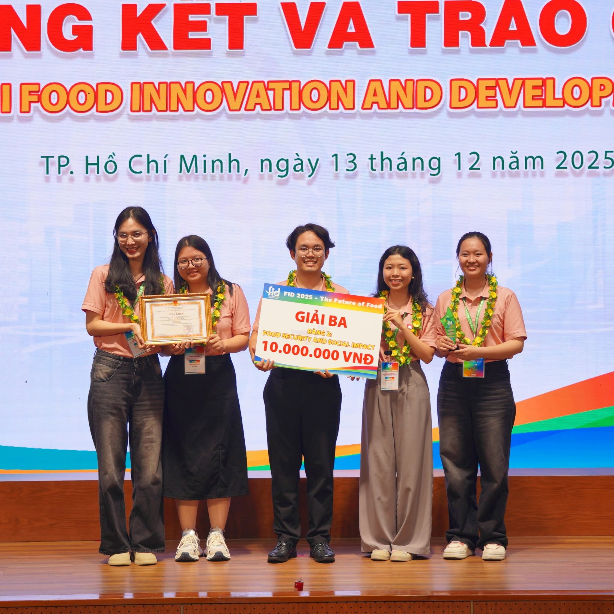
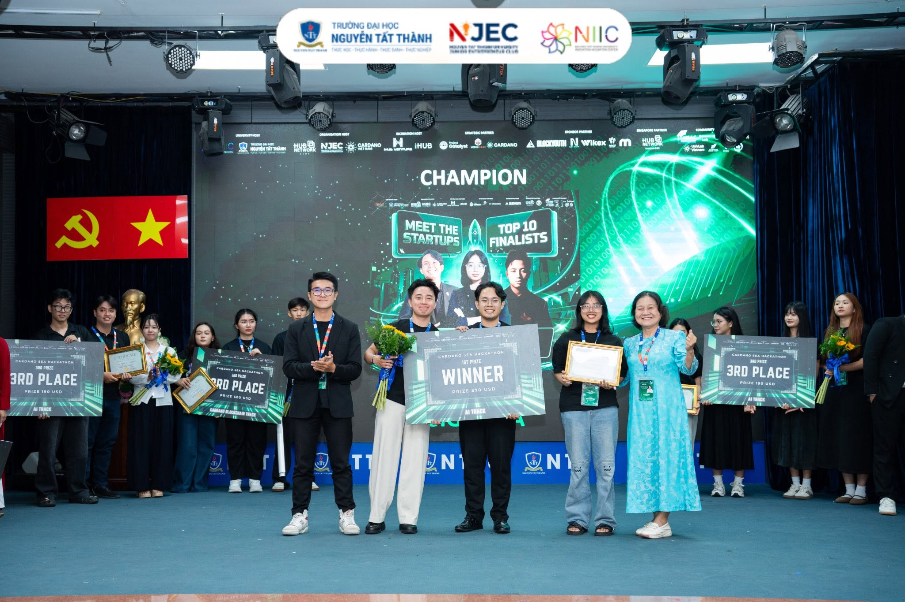
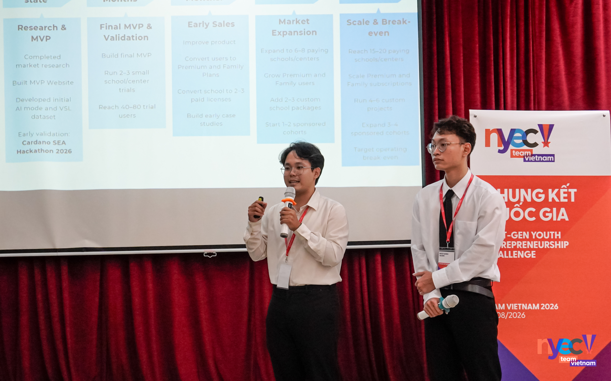

AI-Chemistry
Computer vision and multi-task prediction for smartphone colorimetry, from strip preprocessing and model training to a FastAPI inference service.
Explore repository ↗PyTorchComputer visionFastAPI
OPEN TO AI/ML ROLES & RESEARCH OPPORTUNITIES
Nguyễn Trần Thiên Phúc
I build AI systems, grounded in careful research.
Research Assistant and M.Sc. student at Ho Chi Minh City Open University, with AI engineering internship experience at FPT Software. I connect computer vision and multimodal learning with inference tools, APIs and applications.

01 / Selected AI projects
Four selected repositories showing model development, inference engineering and application integration.
Computer vision and multi-task prediction for smartphone colorimetry, from strip preprocessing and model training to a FastAPI inference service.
Explore repository ↗CTC model packaging, dataset audits and ONNX export, with corpus-level comparison of training and inference runtimes.
Explore repository ↗A Python library and WebSocket service that connects ordered keypoint streams to isolated-sign classifiers, with buffering and model-input checks.
Explore repository ↗A Flutter and FastAPI application for video upload, queued inference, transcript review and subtitle workflows using a visual-speech model.
Explore repository ↗Each project links to its implementation and setup documentation. Application prototypes and model experiments have distinct validation scopes, described in their repositories.
02 / Research directions
Understanding what a model learns, where it fails, and how its evidence carries into a usable system.
Temporal modeling
Visual speech research separating observation, supervision and output scope, with interval and complete-transcript evaluation.
Research manuscript + public codeExplore the study ↗Multimodal recognition
Vietnamese isolated-sign recognition and sign–lip fusion, with explicit attention to camera, recording and signer split limitations.
Published work + ongoing researchExplore the research archive ↗AI for science
Smartphone colorimetry for ammonium and nitrite, connecting preprocessing, concentration prediction and cross-dataset evaluation.
2 first-author conference papersExplore AI-Chemistry ↗03 / Publications
Journal and conference papers, with publisher links and a downloadable bibliography.
HCMCOU Journal of Science - Engineering and Technology, 20(2), 3–14
Decoupling Visual Context and Text Scope in Visual Speech Recognition ↗
View-Robust Sign Foundations and Sign-Lip Fusion for Vietnamese Isolated Sign Language Recognition ↗
These are research manuscripts with public code or result archives; they are separate from the published papers above.
04 / Honors & Awards
Team achievements in food innovation, AI accessibility and youth entrepreneurship.

December 2025
Third Prize
Thịt Tươi Rói · Food Security & Social Impact
Awarded Third Prize in the Food Security & Social Impact category at FID 2025, a national food innovation competition hosted by HUIT. The project brought together students from FPT University and HUIT. Awards were presented on 13 December 2025.
Official result ↗
May 2026
1st Prize · AI Track
Signova · AI-powered accessibility
Signova won First Prize in the AI Track for an AI-powered sign-language assistive solution for deaf and hard-of-hearing people. The final took place on 27 May 2026 after a 24-hour hackathon at Nguyen Tat Thanh University.
Official result ↗
August 2026
Top 20 National Finalist
Signova · Youth entrepreneurship
Selected among the Top 20 national finalists at NYEC Vietnam 2026 with Signova, an AI-powered sign-language accessibility project. Presented the project and its development roadmap at the Vietnam national final.
Competition overview ↗Entrepreneurship, product ideas and building for people.
UniMate — Study-abroad mentorship platform. Selected for the Grand Finale after the Startup Fair and pitching round.
UniMate — Study-abroad mentorship platform. Top 10 selection in the student entrepreneurship competition at National Economics University.
Smable — Smart charging cable concept. Top 10 recognition in a regional innovation challenge involving Vietnam and Thailand.
05 / Background
I work across computer vision, multimodal learning and applied AI. My FPT Software internship focused on OCR, semantic search and retrieval APIs; my current research examines visual speech, sign language and scientific sensing.
I enjoy both parts of the work: asking a useful research question and building the software needed to test and apply it. That includes training pipelines, model evaluation, ONNX inference, Python packages and APIs that connect models to applications.
Python · PyTorch · OpenCV · ONNX Runtime · FastAPI · WebSocket · Docker · Flutter · OCR · Sentence Transformers · Elasticsearch · Dataset audits · Model evaluation
Ho Chi Minh City Open University
Visual speech, sign language & scientific sensing
Ho Chi Minh City Open University
Artificial Intelligence · In progress
FPT Software
OCR, semantic search & retrieval APIs
FPT University, Ho Chi Minh City
Let’s build and investigate useful AI.
I welcome AI Engineer, Machine Learning Engineer and Computer Vision Engineer roles, especially work that combines development with research. I am also interested in Research Assistant positions, collaborations and international MSc/PhD opportunities.